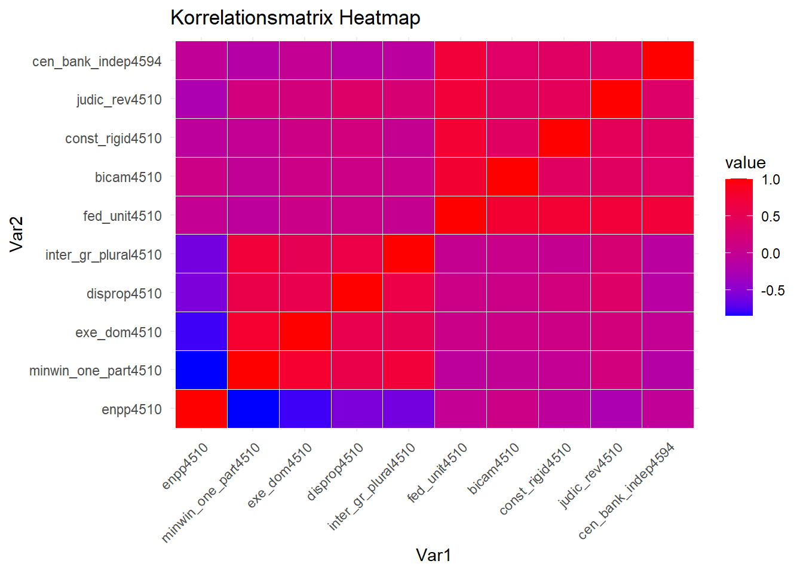
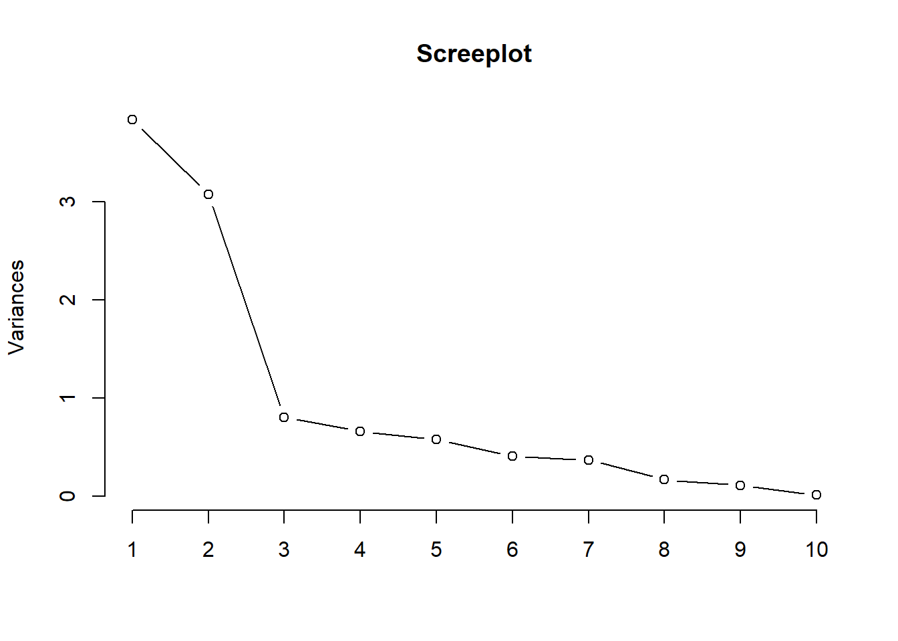
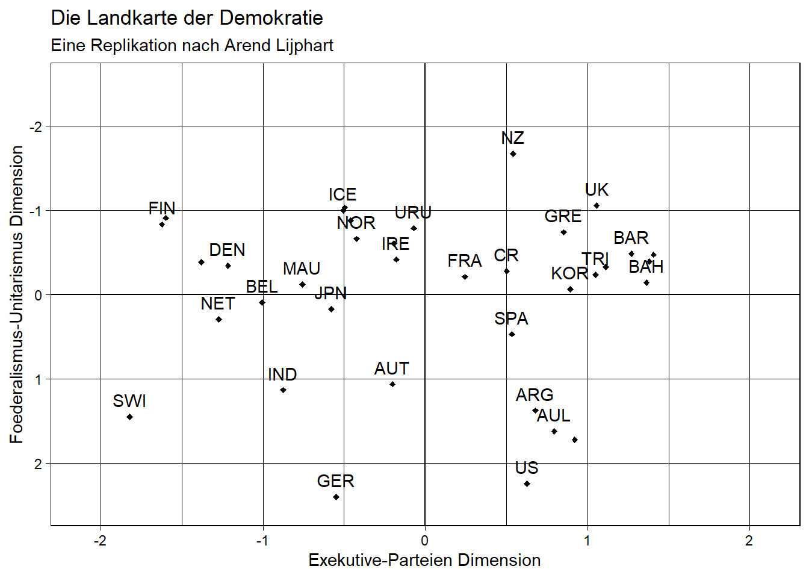

Nachdem wir verschiedene statistische Verfahren kennengelernt haben, um Zusammenhänge zu erkennen und zu visualisieren, werden wir uns nun mit dimensionsreduzierenden Verfahren beschäftigen. Dimensionsreduzierende Verfahren sind statistische Analysemethoden, die eine Menge von Variablen auf die zugrunde liegenden Dimensionen reduzieren. Diese Dimensionen werden auch als (Haupt-)Komponenten oder Faktoren bezeichnet. Ziel ist es, bei möglichst geringem Informationsverlust möglichst wenige Komponenten zu erhalten. Voraussetzung für dimensionsreduzierende Verfahren sind metrische oder kategoriale Variablen.
In dieser Sitzung werden wir die Hauptkomponentenanalyse (PCA) und die explorative Faktorenanalyse (EFA) kennenlernen. Die Hauptkomponentenanalyse ist ein deskriptives Verfahren, während die explorative Faktorenanalyse ein induktives Verfahren zur Datenreduktion darstellt. Es gibt noch viele weitere dimensionsreduzierende Verfahren, wie zum Beispiel die konfirmatorische Faktorenanalyse. Generell schaffen diese Verfahren Übersichtlichkeit und es können Gemeinsamkeiten zwischen den Variablen gefunden werden.
Die explorative Faktorenanalyse wird am Beispiel von Patterns of Democracy von Arend Lijphart durchgeführt. Seine Ergebnisse visualisierte er mit der Landkarte der Demokratie, mit der demokratische Länder auf zwei Dimensionen eingeordnet werden können. Außerdem konnte er zwischen Konsens- und Mehrheitsdemokratien unterscheiden.In dieser Sitzung werden wir Lijpharts Faktorenanalyse und seine Landkarte der Demokratie replizieren.
Dazu müssen Sie zunächst die nötigen Pakete und Daten laden und einige Variablen umkodieren.
library(Hmisc)
library(foreign)
library(ggplot2)
library(stats)
library(reshape2)getwd()
setwd("eigener Pfad")
lijphart <- read.csv2("Lijphart_Data_recode.csv")Zusätzlich zu den Datentransformationen der letzten Sitzungen müssen wir noch einige weitere Variablen umkodieren.
# 1. Zweiparteiensystem vs. Mehrparteiensystem
# (ENPP)
lijphart$enpp4510 <- as.numeric(lijphart$enpp4510)
# 2. Einparteienkabinette vs. Koalitionsregierungen
# (Mittelwert Regierungsdauer Minimal-Winning Koalition und Einparteienkabinette)
lijphart$minwin_one_part4510 <- as.numeric(lijphart$minwin_one_part4510)
# 3. Exekutivdominanz vs. dominante Legislative
# (Durchschnittliche Lebensdauer von Kabinetten)
lijphart$exe_dom4510 <- as.numeric(lijphart$exe_dom4510)
# 4. Mehrheitswahlrecht vs. Verhältniswahlrecht
# (Gallagher-Index der elektoralen Disproportionalität)
lijphart$disprop4510 <- as.numeric(lijphart$disprop4510)
# 5. Pluralistische vs. korporatistische Interessenvertretung
# (Korporatismus-Index nach Siaroff)
lijphart$inter_gr_plural4510 <- as.numeric(lijphart$inter_gr_plural4510)
# 6. Unitarisch-zentralisiert vs. Föderaldezentralisiert
# (Skala von 1 bis 4 (zentral unitarisch bis föderal und dezentral))
lijphart$fed_unit4510 <- as.numeric(lijphart$fed_unit4510)
# 7. Unikameralismus vs. Bikameralismus
# Skala von 1 bis 4, (unikameral bis stark bikameral)
lijphart$bicam4510 <- as.numeric(lijphart$bicam4510)
# 8. Flexible vs. Rigide Verfassungen
# (Skala von 1 bis 4, (einfach, absolut, super, größer super))
lijphart$const_rigid4510 <- as.numeric(lijphart$const_rigid4510)
# 9. Keine Normenkontrolle vs. Normenkontrolle durch Verfassungsgericht
# (Skala von 1 bis 4, vergeben nach Sekundärliteratur)
lijphart$judic_rev4510 <- as.numeric(lijphart$judic_rev4510)
# 10. Abhängige vs. Unabhängige Zentralbank
# (Grad Zentralbankautonomie (Indizies Cukierman, Grilli…))
lijphart$cen_bank_indep4594 <- as.numeric(lijphart$cen_bank_indep4594)Grundsätzlich ist die Auswahl der Variablen wichtig, weil sie in
einem hohen Maße den Erfolg der Faktorenanalyse bestimmt. Lijphart nutzt
für seine Faktorenanalyse die zehn Variablen, die wir zuvor umkodiert
haben. Aus diesen Variablen erstellen wir ein subset.
sub_lijphart <- lijphart[, c("enpp4510", "minwin_one_part4510", "exe_dom4510",
"disprop4510", "inter_gr_plural4510",
"fed_unit4510", "bicam4510", "const_rigid4510", "judic_rev4510", "cen_bank_indep4594")]
head(sub_lijphart)| enpp4510 | minwin_one_part4510 | exe_dom4510 | disprop4510 | inter_gr_plural4510 | fed_unit4510 | bicam4510 | const_rigid4510 | judic_rev4510 | cen_bank_indep4594 |
|---|---|---|---|---|---|---|---|---|---|
| 3.15 | 82.4 | 8.00 | 17.98 | 2.70 | 1.38 | 4.0 | 4 | 2.7 | 0.39 |
| 2.22 | 80.7 | 9.10 | 9.44 | 2.12 | 1.63 | 4.0 | 4 | 3.0 | 0.42 |
| 2.68 | 43.3 | 8.07 | 2.51 | 0.38 | 1.07 | 2.0 | 3 | 3.0 | 0.55 |
| 1.69 | 100.0 | 9.44 | 16.48 | 3.00 | -0.15 | 2.0 | 3 | 2.0 | 0.41 |
| 1.68 | 100.0 | 8.87 | 17.27 | 2.20 | -0.49 | 2.0 | 2 | 2.0 | 0.38 |
| 4.72 | 37.3 | 2.57 | 3.35 | 1.15 | 0.10 | 2.8 | 3 | 1.8 | 0.27 |
Generell sind nur Variablen, die miteinander korrelieren, fähig zur
Bündelung Zudem gilt: Je gößer die Korrelation, desto mehr Varianz kann
durch wenige Faktoren erklärt werden. Daher folgt nach der
Variablenauswahl die Berechnung einer Korrelationsmatrix. In
R geht dies mit folgendem Code:
cor_matrix <- rcorr(as.matrix(sub_lijphart))
cor_matrix## enpp4510 minwin_one_part4510 exe_dom4510 disprop4510 inter_gr_plural4510 fed_unit4510 bicam4510
## enpp4510 1.00 -0.85 -0.79 -0.57 -0.61 0.00 0.09
## minwin_one_part4510 -0.85 1.00 0.78 0.58 0.71 -0.07 -0.03
## exe_dom4510 -0.79 0.78 1.00 0.55 0.51 0.08 0.10
## disprop4510 -0.57 0.58 0.55 1.00 0.61 0.09 0.09
## inter_gr_plural4510 -0.61 0.71 0.51 0.61 1.00 0.00 0.07
## fed_unit4510 0.00 -0.07 0.08 0.09 0.00 1.00 0.76
## bicam4510 0.09 -0.03 0.10 0.09 0.07 0.76 1.00
## const_rigid4510 -0.08 0.00 0.11 0.17 0.01 0.74 0.38
## judic_rev4510 -0.24 0.17 0.18 0.36 0.26 0.71 0.41
## cen_bank_indep4594 -0.04 -0.15 -0.02 -0.12 -0.10 0.71 0.38
## const_rigid4510 judic_rev4510 cen_bank_indep4594
## enpp4510 -0.08 -0.24 -0.04
## minwin_one_part4510 0.00 0.17 -0.15
## exe_dom4510 0.11 0.18 -0.02
## disprop4510 0.17 0.36 -0.12
## inter_gr_plural4510 0.01 0.26 -0.10
## fed_unit4510 0.74 0.71 0.71
## bicam4510 0.38 0.41 0.38
## const_rigid4510 1.00 0.46 0.38
## judic_rev4510 0.46 1.00 0.34
## cen_bank_indep4594 0.38 0.34 1.00
##
## n= 36
##
##
## P
## enpp4510 minwin_one_part4510 exe_dom4510 disprop4510 inter_gr_plural4510 fed_unit4510 bicam4510
## enpp4510 0.0000 0.0000 0.0003 0.0000 0.9897 0.6004
## minwin_one_part4510 0.0000 0.0000 0.0002 0.0000 0.6810 0.8662
## exe_dom4510 0.0000 0.0000 0.0005 0.0015 0.6512 0.5713
## disprop4510 0.0003 0.0002 0.0005 0.0000 0.5876 0.5918
## inter_gr_plural4510 0.0000 0.0000 0.0015 0.0000 0.9852 0.6671
## fed_unit4510 0.9897 0.6810 0.6512 0.5876 0.9852 0.0000
## bicam4510 0.6004 0.8662 0.5713 0.5918 0.6671 0.0000
## const_rigid4510 0.6569 0.9899 0.5308 0.3108 0.9738 0.0000 0.0206
## judic_rev4510 0.1661 0.3215 0.2907 0.0322 0.1229 0.0000 0.0135
## cen_bank_indep4594 0.8199 0.3718 0.9287 0.4862 0.5464 0.0000 0.0241
## const_rigid4510 judic_rev4510 cen_bank_indep4594
## enpp4510 0.6569 0.1661 0.8199
## minwin_one_part4510 0.9899 0.3215 0.3718
## exe_dom4510 0.5308 0.2907 0.9287
## disprop4510 0.3108 0.0322 0.4862
## inter_gr_plural4510 0.9738 0.1229 0.5464
## fed_unit4510 0.0000 0.0000 0.0000
## bicam4510 0.0206 0.0135 0.0241
## const_rigid4510 0.0043 0.0217
## judic_rev4510 0.0043 0.0416
## cen_bank_indep4594 0.0217 0.0416Die Korrelationsmatrix wird in R in mehreren Zeilen
dargestellt, da sie zu groß ist. Sie könnten nun die Grafik zum Beispiel
mit Excel aufarbeiten, um ein übersichtlicheres Ergebnis zu erhalten.
Für einen schnellen Überblick empfiehlt es sich, eine Heatmap mit
ggplot() zu erstellen. Dazu muss zunächst ein
dataframe erstellt werden.
cor_df <- melt(cor_matrix$r)
ggplot(cor_df, aes(Var1, Var2, fill = value)) +
geom_tile(color = "white") +
scale_fill_gradient(low = "blue", high = "red") +
theme_minimal() +
theme(axis.text.x = element_text(angle = 45, hjust = 1)) +
labs(title = "Korrelationsmatrix Heatmap")
Die Heatmap ist so zu interpretieren, dass kalte Farben eine negative Korrelation und warme Farben eine positive Korrelation bedeuten. Weiß würde eine neutrale Korrelation bedeuten. Da wir sehen können, dass alle Variablen miteinander korrelieren, können wir Dimensionsreduktionsverfahren anwenden.
Nachdem wir die Variablen für unsere Analyse ausgewählt und die
Voraussetzungen geprüft haben, können wir zunächst eine
Hauptkomponentenanalyse durchführen. Die
Hauptkomponentenanalyse dient zur Strukturierung der Daten. Mit der
Funktion prcomp() können wir sie durchführen.
model_princomp <- prcomp(sub_lijphart, scale = TRUE)
model_princomp## Standard deviations (1, .., p=10):
## [1] 1.9575733 1.7530967 0.8948009 0.8126860 0.7567629 0.6390219 0.6063879 0.4095548 0.3270288 0.1000158
##
## Rotation (n x k) = (10 x 10):
## PC1 PC2 PC3 PC4 PC5 PC6 PC7 PC8
## enpp4510 0.42791560 -0.18353791 0.35917363 -0.11264655 -0.04624807 -0.10720619 -0.05100845 -0.411251013
## minwin_one_part4510 -0.42483876 0.23837982 -0.13648429 -0.09232681 -0.07090785 0.04930368 0.27872920 0.432597903
## exe_dom4510 -0.41397453 0.14080676 -0.29666253 -0.12080612 -0.37434557 0.30802455 -0.15036206 -0.667579186
## disprop4510 -0.38967840 0.09657021 0.41816948 0.17588221 0.01634489 -0.17807617 -0.76024973 0.127122484
## inter_gr_plural4510 -0.38463166 0.16241527 0.25338448 -0.20698227 0.34517100 -0.56243344 0.37817106 -0.350026993
## fed_unit4510 -0.18418703 -0.52889154 -0.02415918 -0.03926803 -0.01769062 0.02592394 0.03867396 -0.006913301
## bicam4510 -0.14100399 -0.39569770 0.23331885 -0.71228488 -0.29618067 0.03685147 -0.02240476 0.223353978
## const_rigid4510 -0.17370774 -0.38588334 0.03717568 0.56424401 -0.50571352 -0.33594977 0.24441137 -0.005487234
## judic_rev4510 -0.27587202 -0.32191667 0.30184801 0.24173497 0.46957226 0.58364338 0.17144024 -0.091581322
## cen_bank_indep4594 -0.07174855 -0.40634789 -0.61463214 -0.06868306 0.41110605 -0.29601088 -0.29151346 -0.032227719
## PC9 PC10
## enpp4510 -0.66825002 0.09791701
## minwin_one_part4510 -0.67905337 0.04617052
## exe_dom4510 -0.03850410 0.03779896
## disprop4510 -0.07793667 -0.02885296
## inter_gr_plural4510 0.12777380 -0.03607814
## fed_unit4510 -0.10075600 -0.81947726
## bicam4510 0.18608537 0.29606758
## const_rigid4510 0.03247855 0.26783585
## judic_rev4510 -0.01037356 0.26775374
## cen_bank_indep4594 -0.15001200 0.28651449Als Output erhalten wir die Ladungen. Diese werden für zehn Hauptkomponenten dargestellt, da wir zehn Variablen als Input haben. Einige Komponenten sind jedoch wichtiger als andere, da sie mehr Varianz erklären. Um diese zu bestimmen, gibt es mehrere Möglichkeiten. Der einfachste Weg ist die Berechnung eines Screeplots. Der Screeplot ist eine Visualisierung der Eigenwerte in einem Koordinatensystem. Die Eigenwerte geben an, wie wichtig ein Faktor ist. Im Screeplot sind sie absteigend geordnet. Die Anzahl der Faktoren ist am Knick zu erkennen. Dieser Knick ist die größte Differenz der Eigenwerte zwischen zwei Variablen. Der erste Punkt links vom Knick entspricht der Anzahl der Variablen.
screeplot(model_princomp,
type = "lines",
main = "Screeplot")
Wir können anhand des Knicks erkennen, dass zwei Komponenten am besten geeignet sind. Dieses Ergebnis erhalten wir auch, wenn wir die Eigenwerte berechnen und ausgeben lassen. Dabei sind alle Komponenten relevant, die größer als 1 sind. Diese Art der Bestimmung der Anzahl der Hauptkomponenten wird auch als Kaiserkriterium bezeichnet.
eig <- (model_princomp$sdev)^2
eig## [1] 3.83209334 3.07334792 0.80066865 0.66045854 0.57269011 0.40834893 0.36770634 0.16773516 0.10694783 0.01000316Wir können auch untersuchen, wie viel Prozent der Varianz durch die Komponenten erklärt wird. Alle Komponenten zusammen ergeben 100%. Da für unsere Hauptkomponentenanalyse nur die ersten beiden Komponenten relevant sind, können wir sagen, dass die erste Komponente 38,32% und die zweite Komponente 30,73% der Varianz erklärt.
variance <- eig*100/sum(eig)
variance## [1] 38.3209334 30.7334792 8.0066865 6.6045854 5.7269011 4.0834893 3.6770634 1.6773516 1.0694783 0.1000316Mit dem folgenden Code können wir schließlich die Erklärung der Varianz unserer beiden Hauptkomponenten erhalten. Eine Faustregel besagt, dass etwa 70-80% der Varianz erklärt werden sollten, damit das Dimensionsreduktionsmodell möglichst wenige Komponenten mit möglichst wenig Informationsverlust zusammenfasst.
sum(variance[1:2])## [1] 69.05441Unser Modell ist nun reduziert, da wir nur die ersten beiden Hauptkomponenten betrachten. Mit dem folgenden Code können wir uns die Ladungen des reduzierten Modells anzeigen lassen. Negative Werte zeigen eine negative Korrelation und positive Werte eine positive Korrelation an. Je höher der Wert, desto stärker die Korrelation. Als Faustregel gilt, dass bei Werten zwischen 0,3 und 0,5 von einer starken Korrelation gesprochen werden kann. Dies gilt für die ersten fünf Variablen der ersten Dimension und für die letzten fünf Variablen der zweiten Dimension.
model_princomp$rotation[ ,1:2]| PC1 | PC2 | |
|---|---|---|
| enpp4510 | 0.4279156 | -0.1835379 |
| minwin_one_part4510 | -0.4248388 | 0.2383798 |
| exe_dom4510 | -0.4139745 | 0.1408068 |
| disprop4510 | -0.3896784 | 0.0965702 |
| inter_gr_plural4510 | -0.3846317 | 0.1624153 |
| fed_unit4510 | -0.1841870 | -0.5288915 |
| bicam4510 | -0.1410040 | -0.3956977 |
| const_rigid4510 | -0.1737077 | -0.3858833 |
| judic_rev4510 | -0.2758720 | -0.3219167 |
| cen_bank_indep4594 | -0.0717485 | -0.4063479 |
Schließlich können wir die Rotationen in unserem Modell
ändern. Rotation ist eine Transformation, um die Interpretierbarkeit der
Komponenten zu erhöhen. Es gibt mehrere Rotationsmethoden, die wir
verwenden können. Die beiden bekanntesten sind die orthogonale oder
rechtwinklige Rotation (Varimax-Methode) und die schiefwinklige Rotation
(Promax-Methode). Bei der Funktion prcomp ist die Rotation
standardmäßig auf None gesetzt. Dies kann mit dem Argument
rotate = geändert werden. Hier einmal für die orthogonale
Rotation:
model_princomp_vari <- prcomp(sub_lijphart, scale = TRUE, rotate = "varimax")## Warning: In prcomp.default(sub_lijphart, scale = TRUE, rotate = "varimax") :
## extra argument 'rotate' will be disregardedmodel_princomp_vari## Standard deviations (1, .., p=10):
## [1] 1.9575733 1.7530967 0.8948009 0.8126860 0.7567629 0.6390219 0.6063879 0.4095548 0.3270288 0.1000158
##
## Rotation (n x k) = (10 x 10):
## PC1 PC2 PC3 PC4 PC5 PC6 PC7 PC8
## enpp4510 0.42791560 -0.18353791 0.35917363 -0.11264655 -0.04624807 -0.10720619 -0.05100845 -0.411251013
## minwin_one_part4510 -0.42483876 0.23837982 -0.13648429 -0.09232681 -0.07090785 0.04930368 0.27872920 0.432597903
## exe_dom4510 -0.41397453 0.14080676 -0.29666253 -0.12080612 -0.37434557 0.30802455 -0.15036206 -0.667579186
## disprop4510 -0.38967840 0.09657021 0.41816948 0.17588221 0.01634489 -0.17807617 -0.76024973 0.127122484
## inter_gr_plural4510 -0.38463166 0.16241527 0.25338448 -0.20698227 0.34517100 -0.56243344 0.37817106 -0.350026993
## fed_unit4510 -0.18418703 -0.52889154 -0.02415918 -0.03926803 -0.01769062 0.02592394 0.03867396 -0.006913301
## bicam4510 -0.14100399 -0.39569770 0.23331885 -0.71228488 -0.29618067 0.03685147 -0.02240476 0.223353978
## const_rigid4510 -0.17370774 -0.38588334 0.03717568 0.56424401 -0.50571352 -0.33594977 0.24441137 -0.005487234
## judic_rev4510 -0.27587202 -0.32191667 0.30184801 0.24173497 0.46957226 0.58364338 0.17144024 -0.091581322
## cen_bank_indep4594 -0.07174855 -0.40634789 -0.61463214 -0.06868306 0.41110605 -0.29601088 -0.29151346 -0.032227719
## PC9 PC10
## enpp4510 -0.66825002 0.09791701
## minwin_one_part4510 -0.67905337 0.04617052
## exe_dom4510 -0.03850410 0.03779896
## disprop4510 -0.07793667 -0.02885296
## inter_gr_plural4510 0.12777380 -0.03607814
## fed_unit4510 -0.10075600 -0.81947726
## bicam4510 0.18608537 0.29606758
## const_rigid4510 0.03247855 0.26783585
## judic_rev4510 -0.01037356 0.26775374
## cen_bank_indep4594 -0.15001200 0.28651449Und hier für die schiefwinklige Rotation:
model_princomp_pro <- prcomp(sub_lijphart, scale = TRUE, rotate = "promax")## Warning: In prcomp.default(sub_lijphart, scale = TRUE, rotate = "promax") :
## extra argument 'rotate' will be disregardedmodel_princomp_pro## Standard deviations (1, .., p=10):
## [1] 1.9575733 1.7530967 0.8948009 0.8126860 0.7567629 0.6390219 0.6063879 0.4095548 0.3270288 0.1000158
##
## Rotation (n x k) = (10 x 10):
## PC1 PC2 PC3 PC4 PC5 PC6 PC7 PC8
## enpp4510 0.42791560 -0.18353791 0.35917363 -0.11264655 -0.04624807 -0.10720619 -0.05100845 -0.411251013
## minwin_one_part4510 -0.42483876 0.23837982 -0.13648429 -0.09232681 -0.07090785 0.04930368 0.27872920 0.432597903
## exe_dom4510 -0.41397453 0.14080676 -0.29666253 -0.12080612 -0.37434557 0.30802455 -0.15036206 -0.667579186
## disprop4510 -0.38967840 0.09657021 0.41816948 0.17588221 0.01634489 -0.17807617 -0.76024973 0.127122484
## inter_gr_plural4510 -0.38463166 0.16241527 0.25338448 -0.20698227 0.34517100 -0.56243344 0.37817106 -0.350026993
## fed_unit4510 -0.18418703 -0.52889154 -0.02415918 -0.03926803 -0.01769062 0.02592394 0.03867396 -0.006913301
## bicam4510 -0.14100399 -0.39569770 0.23331885 -0.71228488 -0.29618067 0.03685147 -0.02240476 0.223353978
## const_rigid4510 -0.17370774 -0.38588334 0.03717568 0.56424401 -0.50571352 -0.33594977 0.24441137 -0.005487234
## judic_rev4510 -0.27587202 -0.32191667 0.30184801 0.24173497 0.46957226 0.58364338 0.17144024 -0.091581322
## cen_bank_indep4594 -0.07174855 -0.40634789 -0.61463214 -0.06868306 0.41110605 -0.29601088 -0.29151346 -0.032227719
## PC9 PC10
## enpp4510 -0.66825002 0.09791701
## minwin_one_part4510 -0.67905337 0.04617052
## exe_dom4510 -0.03850410 0.03779896
## disprop4510 -0.07793667 -0.02885296
## inter_gr_plural4510 0.12777380 -0.03607814
## fed_unit4510 -0.10075600 -0.81947726
## bicam4510 0.18608537 0.29606758
## const_rigid4510 0.03247855 0.26783585
## judic_rev4510 -0.01037356 0.26775374
## cen_bank_indep4594 -0.15001200 0.28651449Für unser Beispiel sind keine bedeutenden Unterschiede feststellbar. In der Praxis wird die orthogonale Rotation am meisten genutzt.
Wir wollen nun eine explorative Faktorenanalyse durchführen. Auch für
diese sind alle Schritte, die wir in dieser Sitzung durchgeführt haben,
notwendig. Das heißt, die Hauptkomponentenanalyse ist Voraussetzung für
die explorative Faktorenanalyse. Die Faktorenanalyse wird in
R mit factanal() durchgeführt. Wichtig ist
hier, dass wir unsere Daten nennen und die Anzahl der Faktoren angeben.
Diese ist 2, da wir oben 2 als die beste Anzahl von Komponenten
ermittelt haben. Außerdem geben wir die Methode der orthogonalen
Rotation an. Wir können zusätzlich die Faktorwerte berechnen lassen,
indem wir das Argument scores auf regression
setzen. Diese werden für die Visualisierung benötigt.
model_factanal <- factanal(sub_lijphart, 2, rotation = "varimax", scores = "regression")
print(model_factanal, round = 2, cutoff = .3)##
## Call:
## factanal(x = sub_lijphart, factors = 2, scores = "regression", rotation = "varimax")
##
## Uniquenesses:
## enpp4510 minwin_one_part4510 exe_dom4510 disprop4510 inter_gr_plural4510 fed_unit4510
## 0.187 0.104 0.306 0.568 0.477 0.005
## bicam4510 const_rigid4510 judic_rev4510 cen_bank_indep4594
## 0.432 0.455 0.439 0.488
##
## Loadings:
## Factor1 Factor2
## enpp4510 -0.902
## minwin_one_part4510 0.944
## exe_dom4510 0.829
## disprop4510 0.650
## inter_gr_plural4510 0.723
## fed_unit4510 0.998
## bicam4510 0.753
## const_rigid4510 0.736
## judic_rev4510 0.708
## cen_bank_indep4594 0.711
##
## Factor1 Factor2
## SS loadings 3.410 3.130
## Proportion Var 0.341 0.313
## Cumulative Var 0.341 0.654
##
## Test of the hypothesis that 2 factors are sufficient.
## The chi square statistic is 75.27 on 26 degrees of freedom.
## The p-value is 1.1e-06Mit der Funktion print weisen wir R an, das
Ergebnis der Faktorenanalyse auszugeben. Dabei legen wir mit dem
Argument digits die Anzahl der Rundungsziffern fest.
Zusätzlich können wir mit cutoff bestimmen, ab welcher
Grenze die Ergebnisse nicht mehr ausgegeben werden sollen. Auf diese
Weise können wir die Übersichtlichkeit unserer Faktorenanalyse
erhöhen.
Das Ergebnis der Faktorenanalyse zeigt die gewünschte Anzahl von Faktoren und deren Faktorladungen für die zehn Variablen. Aufgabe des Forschers oder der Forscherin ist es nun, die Faktoren inhaltlich zu interpretieren. In der Regel wird nach Gemeinsamkeiten zwischen den Variablen gesucht. Lijphart bezeichnet den ersten Faktor als Exekutive-Parteien-Dimension und den zweiten Faktor als Föderalismus-Unitarismus-Dimension.
Arend Lijphart fasst die Ergebnisse seiner Faktorenanalyse in der Landkarte der Demokratie zusammen. Dort können die untersuchten Demokratien anhand der beiden Dimensionen eingeordnet werden. Es entsteht eine Grafik, in der die Demokratien eingeordnet und miteinander verglichen werden können.
Diese Form der Visualisierung wird mapping genannt. Wir
können es mit R nachvollziehen. Dazu benötigen wir die
Faktorwerte, die angeben, wie stark die Untersuchungseinheiten
von den Faktoren erfasst werden. In diesem Fall bedeutet dies, wie gut
eine Demokratie durch die Dimensionen Exekutive-Parteien und
Föderalismus-Unitarismus beschrieben wird. Die Faktorwerte können als
R mit folgendem Code ausgegeben werden:
head(model_factanal$scores)| Factor1 | Factor2 |
|---|---|
| 0.6774763 | 1.3772267 |
| 0.7943245 | 1.6252078 |
| -0.2026600 | 1.0635061 |
| 1.3630201 | -0.1426088 |
| 1.2698724 | -0.4842255 |
| -1.0058544 | 0.0931026 |
Um unsere Replikation mit Lijpharts Landkarte der Demokratie besser
vergleichen zu können, passen wir sie etwas an. Wir verändern die
Datenpunkte mit geom_point(), indem wir sie mit dem
Argument size verkleinern, ihre Form mit shape
in eine Raute ändern und diese mit fill schwarz ausfüllen.
Außerdem beschriften wir unsere Datenpunkte, um zu überprüfen, ob sie
ungefähr mit der Position der Datenpunkte von Lijphart übereinstimmen.
Dazu verwenden wir geom_text (). Zuerst definieren wir mit
label die Daten für unsere Beschriftung. Danach können wir
die Beschriftung mit nudge_y auf der y-Achse verschieben.
Das Argument check_overlap dient dazu, Überlappungen der
Beschriftungen zu vermeiden. Mit geom_hline() und
geom_vline() können wir eine horizontale und eine vertikale
Linie bei 0 zeichnen. Dies erleichtert die Zuordnung der Demokratien.
Anschließend definieren wir mit labs() die
Achsenbeschriftungen, den Titel und den Untertitel. Mit
coord_cartesian() können wir das Koordinatensystem an der
x-Achse spiegeln, indem wir die Definitionsränder von xlim
von negativ nach positiv anordnen. Zum Schluss legen wir mit
theme_linedraw() das Design unserer Grafik fest.
scores_data <- as.data.frame(model_factanal$scores)
plot <- ggplot(data = scores_data, aes(x = Factor1, y = Factor2)) +
geom_point(size = 1, shape = 23, fill = "black") +
geom_text(aes(label = lijphart$Country),
nudge_y = -.2,
check_overlap = T) +
geom_hline(yintercept = 0) +
geom_vline(xintercept = 0) +
labs(x = "Exekutive-Parteien Dimension",
y = "Foederalismus-Unitarismus Dimension",
title = "Die Landkarte der Demokratie",
subtitle = "Eine Replikation nach Arend Lijphart") +
coord_cartesian(ylim = c(2.5, -2.5), xlim = c(-2.1, 2.1)) +
theme_linedraw()
plot
Anschließend speichern wir die Grafik mit ggsave() in
unserer working directory.
# Grafik speichern
ggsave("Landkarte der Demokratie.png")## Saving 7 x 5 in imageBitte beachten Sie, dass die Linien in der von Ihnen replizierten Landkarte der Demokratie je nach Betriebssystem unterschiedlich in ‘R’ ausgegeben werden können. Nun können wir unsere “Landkarte der Demokratie” mit der von Arend Lijphart in Patterns of Democracy vergleichen. Es fällt auf, dass die Diagramme starke Ähnlichkeiten aufweisen. Allerdings sind einige Demokratien in unserer Grafik verschoben, zum Beispiel liegt Argentinien bei uns etwas weiter links als bei Lijphart. Dies liegt daran, dass Faktorenanalysen in verschiedenen Statistikprogrammen mit unterschiedlichen Algorithmen berechnet werden.
subset mit allen Variablen aus
sub_lijphart außer der Variablen der Interessenvertretung.